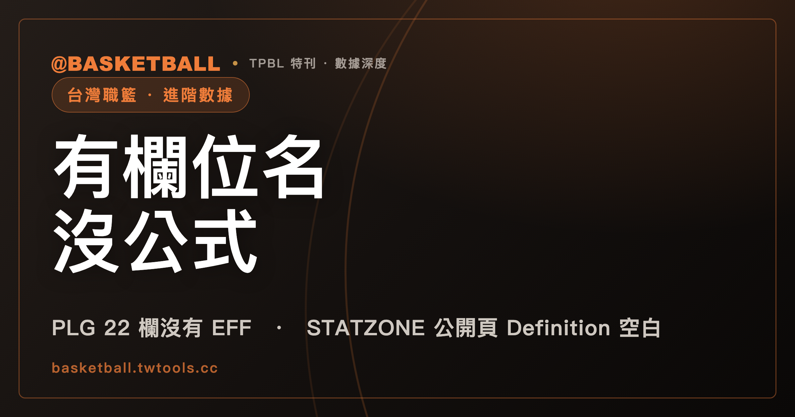

官方頁面看得到 EFF、+/-，公式卻要去另一個網站找：TPBL、PLG 數據頁怎麼看
截至 2026 年 9 月 28 日抓取的頁面版本，TPBL 官方球員數據頁的排序選單裡看得到「EFF」「+/-」兩個欄位名稱，PLG 官方主站的表格卻沒有這兩欄；PLG 頁面上「進階數據」按鈕真正打開的，是另一個網站的入口，那個網站的 Glossary 頁雖然收了 EFF 詞條，Definition 與 Formula 兩欄卻都是空白。

新手村｜台灣職籃・進階數據要去哪查
看熟了 NBA 的 box score，再打開 TPBL 或 PLG 的官方數據頁，會發現兩個熟悉的名字：EFF、+/-。這兩個欄位名稱確實出現在官方頁面上，但「這個數字怎麼算出來」這件事，兩個聯盟目前都沒有攤在讀者看得到的官方頁面上。想知道公式，得自己點開官方網站底下藏著的另一份資料，而且點開之後，看到的公式文字跟官方公開頁面上寫的，還對不太起來。
這篇文章拿 TPBL、PLG 官方數據頁截至 2026 年 9 月 28 日的頁面版本當例子，拆解 EFF、+/- 這兩個名字從哪裡出現、又在哪裡斷線。讀完之後，你應該能自己在任何一個聯盟的數據頁上，分辨「這個欄位名稱是官方承認的」跟「這個欄位的算法官方有沒有公開講清楚」是兩件不同的事。
TPBL 排序選單有 EFF、+/-，但目前沒有資料可以核對
TPBL 官方球員數據頁（tpbl.basketball/stats/players）的排序欄位選單裡，「EFF」對應的內部值是 efficiency，「+/-」對應的內部值是 plus_minus。這兩個選項跟「得分」「籃板」這些基本欄位排在同一份選單裡——換句話說，在 TPBL 2025-26 賽季頁面版本上，EFF 與 +/- 是頁面自己承認的正式統計欄位名稱，不是外部媒體自己加上去的稱呼。
但截至 2026 年 9 月 28 日晚間抓取的頁面版本，頁面預設選在「2025-26 賽季」，整份表格目前顯示「篩選下沒有任何資料」。也就是說，EFF、+/- 這兩欄在有球員數據時實際會排出什麼順序、顯示什麼數字，本次查到的頁面版本看不到。頁面同時也保留「2024-25 賽季」這個選項，但這篇文章只處理本次抓到的頁面狀態，不去談那個選項切換後會出現什麼。
這一點值得先記住：欄位名稱已經確認存在，但「這個名稱底下有沒有可查的數字」，是另一件要分開確認的事，後面 PLG 那邊會看到同一個分界線用不同方式出現一次。
PLG 官方頁面的表格目前只有 22 欄「基本數據」，EFF、+/- 都不在裡面
PLG 官方球員數據頁（pleagueofficial.com/stat-player/2025-26）目前渲染出來的表格，從「出賽」一路排到「失誤」「犯規」，總共 22 欄，全部標成 class="regular"（基本數據）。這 22 欄裡沒有 EFF，也沒有 +/-。
頁面上另外有一顆「基本數據／進階數據」切換鈕，對應的 JavaScript 函式 toggleBoxscore() 邏輯，會嘗試把標成 class="advanced" 的欄位顯示出來。但整份頁面原始碼裡搜尋 class="advanced"，結果是 0 筆——這些「進階欄位」目前根本不在表格的 DOM 結構裡。這顆按鈕實際會切換的，是顯示或隱藏一塊 class 為 .statzone-wrap 的宣傳區塊，而不是在原本那張表格裡多長出 EFF、+/- 兩欄。
那塊宣傳區塊裡放了一顆官方按鈕，連到 https://statzone.pleagueofficial.com。也就是說，PLG 官方主站目前把「進階數據」這件事，實質上導流給另一個網站處理，而不是在自家的球員數據表裡直接呈現。
PLG 頁面的「進階數據」按鈕，打開的是另一個網站的入口
點進 https://statzone.pleagueofficial.com，內容其實來自另一個網域 statzone.preciser.io。瀏覽器分頁標題以「P. LEAGUE+」結尾，頁面 meta 說明文字寫的是「探索 Preciser 的綜合 P. LEAGUE+ 分析平台」。換句話說，這個頁面把自己定位成「P. LEAGUE+」品牌底下的產品，技術供應商掛名是「Preciser」。
這個頁面內嵌了一份多語系翻譯字典，裡面鍵值 eff 對應的中文顯示字串是「效率」，鍵值 plus_minus 對應的顯示字串是「+/-」。這是目前找到的一個官方（掛名 P. LEAGUE+）來源，直接寫出「EFF 對應中文效率」「plus_minus 對應 +/- 符號」這組對照。
同一份內嵌資料裡，還藏著一個叫 advanced_stats_formula 的字典，裡面 eff 這個鍵值對應一段完整的中文公式文字：「效率 = 得分 + 籃板 + 助攻 + 抄截 + 阻攻 - (出手次數 - 二分球得分 - 三分球得分 - 罰球得分) - (失誤次數 + 犯規次數)」。這裡要特別說清楚：這段文字出現在頁面的內部翻譯／設定資料裡，不是使用者在 Glossary 頁面上實際看得到的「Formula」欄，一般讀者照正常路徑瀏覽這個網站，並不會看到這段文字被公開列出來。下一節會看到，公開版面上同一個 EFF 詞條的 Formula 欄，其實是空的。
STATZONE 官方 Glossary 頁收了 EFF 詞條，但 Definition、Formula 兩欄都是空白
PLG STATZONE 公開的 Glossary 頁（statzone.preciser.io/zh-TW/plg/glossary）裡，確實有一張「EFF」的詞條卡片，Name 欄寫的是「Efficiency」，Type 欄標示為「Advanced」。但同一張卡片的 Definition 欄和 Formula 欄，兩欄目前都沒有任何文字。
也就是說，這個掛 P. LEAGUE+ 名字的官方公開頁面，承認 EFF 是一個「進階」統計項目，卻沒有在使用者看得到的地方寫出它的定義或算法——跟上一節找到的、藏在頁面內部資料裡的那段公式文字，是兩處對不上的內容。
同一個 Glossary 頁的「+/-」詞條，情況不太一樣。Name 欄寫「Plus-Minus」，Definition 欄確實有文字：「The point differential when a player or team is on the floor」（球員或球隊在場上時的分差）。也就是說，+/- 這個詞條比 EFF 完整一點，至少留了中英文都看得懂的白話定義，但 Formula 欄同樣是空的。
+/- 的官方定義，PLG 跟 NBA 逐字相同；NBA 官方詞彙表裡查不到 EFF
NBA 官方數據詞彙表（stats.nba.com/stats/help/glossary）裡，「+/-」詞條的定義文字是「The point differential when a player or team is on the floor」，Formula 欄同樣是空字串，Type 標示「Traditional」。這段英文定義跟前一節 STATZONE 的「+/-」定義，逐字相同。
同一份 NBA 官方詞彙表裡，搜尋 id 為 eff、name 為 Efficiency、或顯示文字為 EFF 的詞條，結果都是 0 筆。這裡要把話說得精準一點：這只能證明「2026 年 9 月 28 日抓到的這一份 NBA Glossary 頁面沒有 EFF 詞條」，不能反過來推論成「EFF 不是 NBA 正式統計項目」這種更大的結論——這裡只看了詞彙表這一個頁面，沒有核對 NBA 是否在別的頁面定義過 EFF。
站外常把 EFF 叫做「效率值」、把 +/- 叫做「正負值」，這兩個中文說法在 TPBL、PLG 官方頁面本身都沒有出現過，是站外慣用的中文翻譯，不是規則書或官方頁面上的用語，讀到這兩個詞的時候，可以記得它們是慣稱而不是官方定義詞。
遇到「有欄位名、沒公式」的頁面，可以怎麼查
把三個聯盟目前的狀態放在一起看，會更清楚「欄位名稱存在」跟「公式公開」是兩回事：
| 聯盟 | 欄位名稱是否列在官方頁面 | Definition 是否公開 | Formula 是否公開 |
|---|---|---|---|
TPBL（stats/players 排序選單） |
EFF、+/- 都列在選單裡 | 本次抓取看不到（無數據列） | 本次抓取看不到（無數據列） |
| PLG（STATZONE Glossary 頁） | EFF、+/- 都有詞條卡片 | EFF 空白；+/- 有英文定義 | EFF、+/- 皆空白 |
| NBA（Stats Glossary 頁） | +/- 有詞條；EFF 這次沒查到 | +/- 有英文定義 | +/- 空白 |
以下是這篇文章的讀法，不是任何聯盟官方規定：下次打開一個陌生的數據頁，看到一個看起來很進階的欄位名稱，可以照這個順序確認三件事——第一，這個名字是不是頁面自己承認的正式欄位（排序選單、表頭都算）；第二，目前的表格裡有沒有對應的數字欄位，還是只是選單裡的一個名字；第三，如果頁面有連到 Glossary 或說明頁，Definition 跟 Formula 兩欄是不是真的填了字，還是卡片存在但欄位空白。三個問題分開問，比較不容易把「有這個名字」誤會成「官方已經講清楚怎麼算」。
技術統計表裡 PTS、FGM、+/- 這些基本欄位怎麼成對讀，本站另一篇文章投籃 12 次只得 6 分：技術統計表的欄位，要成對讀、拆開讀有處理過，這裡不重複。真實命中率、進攻效率與節奏這類需要額外公式的進階數據，本站也各有一篇同樣是 40% 命中率，得分效率為什麼可以差很多？從 FG% 讀到 TS%與假設兩隊場均都是 115 分，每 100 回合得分為什麼差了 10 分？處理過對應的 NBA 官方公式，這裡同樣不重複。
常見問題
TPBL 的官方數據頁真的有 EFF 這個欄位嗎？
有。TPBL 官方球員數據頁（stats/players，2025-26 賽季頁面）的排序選單裡，EFF 對應內部值 efficiency，跟「得分」「籃板」排在同一份選單裡，是頁面自己承認的正式統計欄位名稱。但截至 2026 年 9 月 28 日抓取的頁面版本，目前沒有任何可顯示的球員數據列，這個欄位排序或顯示時實際長什麼樣子，本次抓取看不到。
PLG 官方數據頁的「進階數據」按鈕，按下去會出現 EFF、+/- 嗎？
不會。截至 2026 年 9 月 28 日抓取的 2025-26 賽季頁面版本，這顆按鈕實際的作用是顯示或隱藏一塊導去外部網站（statzone.pleagueofficial.com，掛 P. LEAGUE+ 名字、由 Preciser 提供技術）的宣傳區塊，而不是在原本的 22 欄基本數據表格裡再長出 EFF、+/- 兩欄。
STATZONE 頁面裡找到的那段 EFF 公式文字，可以當成官方公布的算法嗎？
不建議直接這樣用。那段公式文字出現在 PLG STATZONE 頁面內部的多語系設定資料裡，不是 STATZONE 官方 Glossary 頁面上使用者看得到的 Formula 欄——同一個 EFF 詞條在 PLG STATZONE 公開的 Glossary 頁面上，Definition 與 Formula 兩欄（截至 2026 年 9 月 28 日抓取版本）都是空白，兩處內容並不一致。
NBA 官方詞彙表裡沒有 EFF，是不是代表 EFF 不算正式統計項目？
不能這樣推論。這裡只確認了「2026 年 9 月 28 日抓取的這份 NBA Stats Glossary 頁面，搜尋不到 EFF 詞條」，沒有核對 NBA 是否在詞彙表以外的其他頁面定義過 EFF，不能從單一頁面查無反推成「EFF 不是 NBA 正式統計項目」這種制度性結論。
資料來源
- TPBL 官方球員數據頁（tpbl.basketball，2025-26 賽季頁面，2026 年 9 月 28 日 23:09 取得）：tpbl.basketball/stats/players
- PLG 官方球員數據頁（pleagueofficial.com，2025-26 賽季，2026 年 9 月 28 日 23:12 取得）：pleagueofficial.com/stat-player/2025-26
- STATZONE 平台頁面（經 statzone.pleagueofficial.com 導向，內容來自 statzone.preciser.io/zh-TW/plg/product-description，2026 年 9 月 28 日 23:14 取得）：statzone.pleagueofficial.com
- STATZONE 官方 Glossary 頁（statzone.preciser.io，2026 年 9 月 28 日 23:15 取得）：statzone.preciser.io/zh-TW/plg/glossary
- NBA Stats Glossary（nba.com，2026 年 9 月 28 日 23:17 取得，頁面無版本標記）：nba.com/glossary